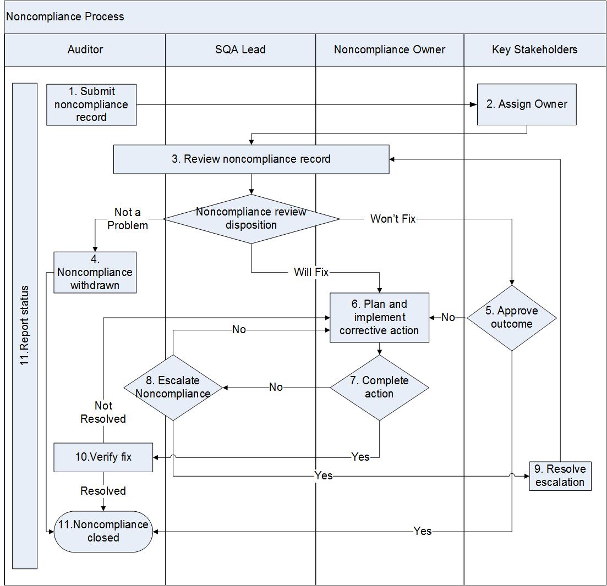

Noncompliance Process¶
This process describes how noncompliances resulting from internal audits (Quality or Configuration Management) are managed. The Software Quality Assurance (SQA) Lead is responsible for the quality audit noncompliances and the Configuration Management (CM) Lead is responsible for the CM audit noncompliances. Noncompliance owners can be anyone and the owners are responsible for resolving noncompliances.
The SQA/CM Lead may designate another person to perform the noncompliance process. The Key Stakeholders (e.g., Engineering Managers/Director, Engineering Program Manager (EPM), Technical Lead, Test Lead, noncompliance owner) participate in this process.
Entry Criteria |
An audit finds a noncompliance |
Inputs |
Audit Record in the Audit Tracking System(e.g. Trace) |
Exit Criteria |
The Noncompliance Record is closed. The noncompliance is either fixed, determined not to fix with justification, or withdrawn because it was not valid. |
Outputs |
Noncompliance Records in Audit tool and status closed. |
Activities¶

Step # |
Activity Name |
Description |
|---|---|---|
1 |
Submit Noncompliance Record |
In Trace, under the Audit Record that found the noncompliance, the Auditor creates a new Noncompliance Record. These records are children of the Audit Record once they are manually linked to the Audit Record in Trace. (In the left pane of the Trace window, in the Audits tab, click on “edit tree.” to see Audit Records and the associated noncompliances) Fill in the mandatory fields as shown in in the Tools and Templates section below. The Severity can be set to:
If observations are found, auditor creates action items in Trace and attaches to the Audit Record. Action items will be reviewed and tracked to closure, according to the Action Item process. Observations (opportunities for improvement) are evidence of weak practices (not of significant concern) which if not addressed could result in a future nonconformity. |
2 |
Assign owner |
The Key Stakeholders (e.g., Engineering Managers/Director, Engineering Program Manager (EPM), Technical Lead, Test Lead) discuss and assign an Owner to fix the noncompliance. |
3 |
Review Noncompliance Record |
Discuss the noncompliance with the noncompliance Owner. Determine if it is a valid problem. |
4 |
Noncompliance withdrawn |
If the noncompliance is not valid, set the Resolution to Withdrawn and provide an explanation in the Comments. |
5 |
Approve “won’t fix” |
If the noncompliance is valid, but the Owner cannot address it, set the Resolution to Won’t Fix. If the Key Stakeholders (e.g., Engineering Managers/Director, Engineering Program Manager (EPM), Technical Lead, Test Lead) approve not fixing the issue, update the Comment field and close the noncompliance. If the Key Stakeholders do not approve, then the noncompliance must be addressed. |
6 |
Plan and implement corrective action |
If the noncompliance is valid and the Owner will fix it, discuss the corrective action with the Owner and fill in the Corrective Action Plan field. Agree on a date for completion with the Owner and fill in the Due Date. |
7 |
Complete action |
If the Owner completes the action, the Auditor verifies the fix. If the action is not completed, the Auditor/SQA Lead decides to escalate the issue. |
8 |
Escalate noncompliance |
If the Owner fails to carry out the corrective action, the Auditor/SQA Lead and Owner attempt to reach an agreement on when the action will be completed. If an agreement is reached, it is documented in the Noncompliance Record. If an agreement is not reached, the Auditor/SQA Lead escalates the noncompliance to the Key Stakeholders (e.g., Engineering Manager, Engineering Program Manager (EPM), Technical Lead, Test Lead). |
9 |
Resolve escalation |
The Key Stakeholders (e.g., Engineering Manager, Engineering Program Manager (EPM), Technical Lead, Test Lead) work with the Owner or Owner’s manager to resolve the escalation. |
10 |
Verify fix |
When the Owner completes the fix, the Auditor verifies the fix addresses the noncompliance. The Auditor enters what is done to verify the fix in the Verification of Corrective Action field. If the action repairs the problem, the Auditor sets the Noncompliance Resolution to Fixed. If the fix does not fully address the noncompliance, the auditor and Owner revise the corrective action and the noncompliance remains open. |
11 |
Noncompliance closed |
The Auditor sets the Status to Closed when either:
|
12 |
Report status |
Progress against noncompliances is reported periodically to the EPM. |
Tool & Template Instructions¶
Trace database: https://trace3.windriver.com
Trace Audit Record Template:
Field Name |
Description |
|---|---|
Auditor (Mandatory) |
The name of the auditor. |
Assigned (Mandatory) |
The name of the Owners who must address the noncompliance. |
Responsible Team (Mandatory) |
The team responsible to address the noncompliance. |
Noncompliance Severity (Mandatory) |
The impact of the noncompliance on the program or product.
|
Priority |
Priority of addressing this noncompliance relative to other noncompliances. |
Due Date |
When the noncompliance will be fixed. |
Summary (Mandatory) |
Summary of the noncompliance. The summary should include a prefix to identify one or more program releases (e.g. SR0630) this noncompliance applies to. |
Description (Mandatory) |
Description of the noncompliance. |
Corrective Action Plan |
What will be done to address the noncompliance. |
Verification of Corrective Action |
What was done to verify the noncompliance was fixed. |
Noncompliance Resolution |
When the noncompliance is closed, set to fixed, withdrawn or won’t fix. |
CC |
People who should be notified when record is updated. |
Verification of Effectiveness |
Evaluation of the effectiveness of the corrective/preventive actions identified in preventing recurrence. |
Link to RCA |
URL to where Root Cause Analysis was performed, if any. |
Status |
Open or closed. |
Change Log¶
Date |
Change Request ID |
Version |
Change By |
Description |
05/14/2020 |
N/A |
0.1 |
Shree Vidya Jayaraman |
Initial Draft |